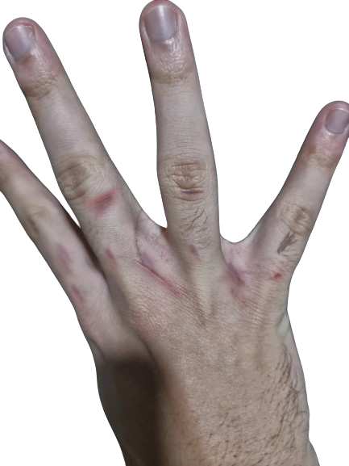

early april: after breakup i wasnt necessarily upset because i believed it was an end to a very unhealthy relationship. in this time i found sally, she was nice but i still wasnt sure if im over youu. and i figured out, i wasnt. i stopped you but ig it wasnt enough.
24th april: it broke me apart. it was probably the worst thing happened last year. i got so angry ended up blocking you. i wasnt only angry but also sad. it was like i lost to someone.. i got cuts and bruises all over my fingers from rage boxing everyday. literally had to vipe blood off the punching bag everytime. although i had the best shape ever thanks to you lol. i even imagined you as the bag and that was the only way to kill my anger hehe. i was crazy af, driving to the mountains after midnight and walking there not seeing anyone for hrs straight was kinda fun but scary lol
26th april: sally clutched in. i started getting back to life, she was kinda boring ngl lol but i stopped thinking about you :P
